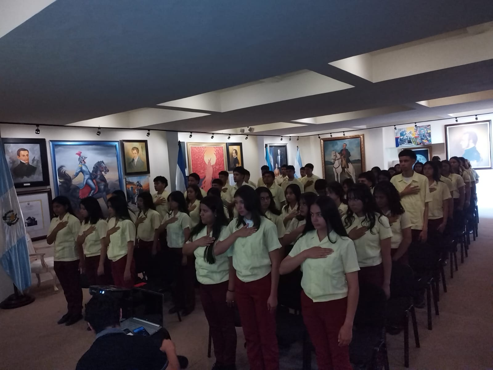
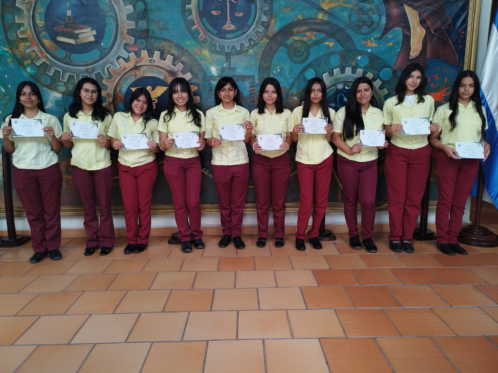

Jóvenes de último de bachillerato del Instituto Técnico Francisco Miranda realizan su desempeño académico y de conocimientos en la Casa Morazánica.
Los alumnos del Instituto Técnico Francisco Miranda demostraron una vez más su compromiso con la excelencia educativa al participar activamente en una jornada académica desarrollada en las instalaciones de la Casa Morazánica, ubicada en el centro histórico de Tegucigalpa.

Durante esta visita, los estudiantes tuvieron la oportunidad de fortalecer sus conocimientos en áreas como historia nacional, civismo y patrimonio cultural, al tiempo que pusieron en práctica habilidades adquiridas en el aula. La experiencia no solo contribuyó a su desarrollo académico, sino que también fomentó en ellos un mayor sentido de identidad y pertenencia nacional.
Los docentes acompañantes destacaron el buen comportamiento, la disciplina y el entusiasmo de los jóvenes, quienes participaron en actividades educativas, exposiciones interactivas y recorridos guiados por el histórico recinto.
Esta iniciativa forma parte del compromiso del Instituto Técnico Francisco Miranda de brindar una educación integral que combine la formación técnica con el conocimiento humanístico, promoviendo la reflexión crítica y el respeto por los valores patrios.